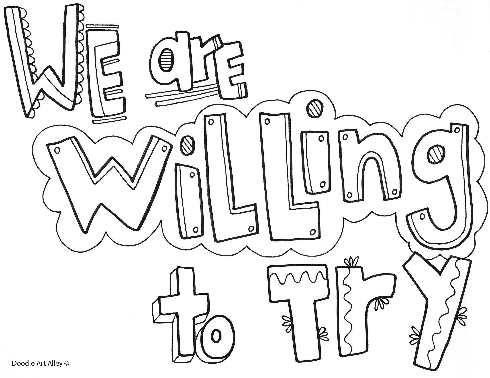

6 Expectations
Professional Behavior
All FMA Analytical Services staff (including the PM) are expected to adhere to the code of conduct and norms of behavior listed in Chapter 4 Code of Conduct of this manual. See also the resources for Psychological Safety.
Availability
- Core hours for the AFSC are 9:30 am to 2:30 pm, T,W,R.
- A-Team members are encouraged to work in the office on one or more of these days.
- Core hours do not apply on Monday or Friday.
- NOAA Telework Policy for Federal employees requires 2 days in the office per week.
- Non-Federal employees should follow the telework guidance from their employer.
You are not expected to be available 24/7. Similarly, unless it is an emergency, do not expect responses to emails or any communication before or after regular business hours on weekdays (6 am - 6 pm), or any time on weekends/holidays/flex-days. However, because we recognize that A-Team members should be able to create a working schedule that is right for them, team members will not be penalized for sending communication outside normal working hours.
G-Mail
We communicate largely via email on the A-Team. You should therefore check your email at least once a day during the normal work week.
G-Calendar
Much of our work is communicating and much of that communication comes in the form of meetings. Therefore, you should:
- Make your calendar visible to others.
- Keep your calendar up-to-date
- Add your working location and hours
- Add leave and out of office (OOO)
- Set-up automated OOO messages with alternative contacts, if OOO for longer than 1 day
Attendance at regularly scheduled events
Attendance, either virtual or in-person, is reasonably expected at:
- Semimonthly A-Team meetings
- Individual 1:1 with Jason (in-person when possible)
- Regularly scheduled project meetings
- NPFM Council Meetings
- FMA All-hands
Attendance is strongly recommended when possible at:
- AFSC All-Hands
- Other Center-wide Meetings
Expectations of the Program Manager
As of 2023, Jason Jannot is the FMA Analytical Program Manager. You can read about his leadership and management philosophy here.
The Program Manager will (at a minimum) provide the A-Team with:
- Clarity (the
why?) - Guidance (the
how?)
- Expectations (the
what?)
- Collaboration & Communication (the
who?) - Prioritization & Gate-keeping
- Accountability
- Visibility & Public Recognition
- Overcoming Barriers
- Timely Administrative Support
In addition to the above, the Program Manager will (at a minimum) provide individual team members with:
- Positive feedback & constructive criticism on work
- Professional career support and development, including but not limited to:
- opportunities for
- training
- presenting (e.g., conferences, meetings, outreach, etc.)
- publishing
- advancing (e.g., promotion, details, etc.)
- collaborating
- leading
- mentoring
- training
- opportunities for
- Regular meetings to discuss work & maintain progress on goals
- Empathetic listening
- Coaching
- Behave professionally and ethically in all work interactions
Expectations of Team Members
A-Team members will (at minimum):
- behave professionally and ethically in all work interactions
- strive to produce the best science, given the constraints
- grow and maintain technical and inter-personal skills
- share knowledge, experience, code, and time
- adopt a service mindset
- adopt a collaborative working mindset
- adapt and be flexible, within reason
- communicate clearly and effectively
- communicate both successes and sticking points regularly
- contribute to creating a positive, inclusive, and safe work culture
Remember, as a government agency, we serve the people of the United States and service is 1/3rd of NOAA’s mission. Adopting a service mindset when approaching each other, stakeholders, partners, and collaborators will magnify our positive impacts on marine ecosystems, commercial fishing, and the wider world.
Some ways to adopt a service mindset:
- Share - code, knowledge, resources, opportunities
- Serve as a role model
- Serve as a resource for other members of the A-Team
- Nominate your peers for their hard work and achievements - AFSC Awards page.
- Participate in outreach activities
- Mentor others when appropriate, especially new team members
Team Collaboration and Communication
Although the Program Manager is your primary supervisor, everyone should always feel like they can reach out to anyone else on the A-team for help or collaboration.
“We are Willing to Try” artwork © Samantha Tustison Snyder, Doodle Art Alley Inc.